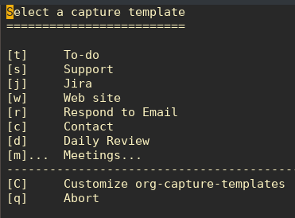
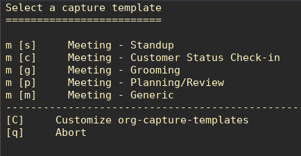
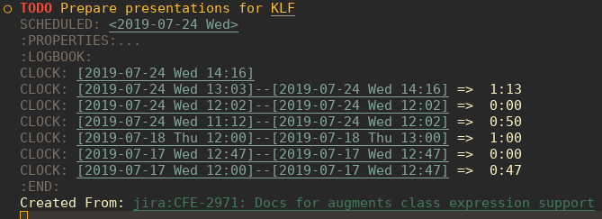
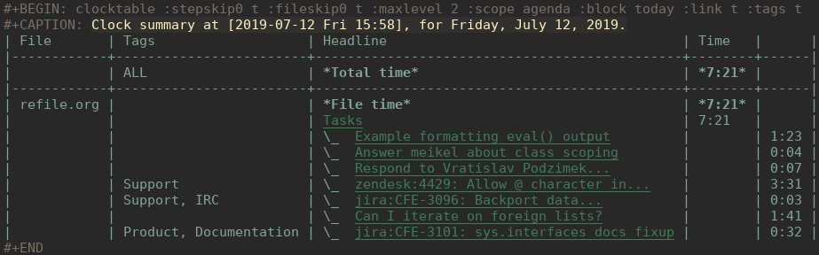
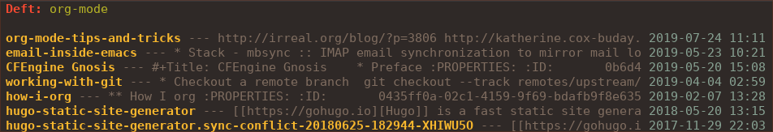
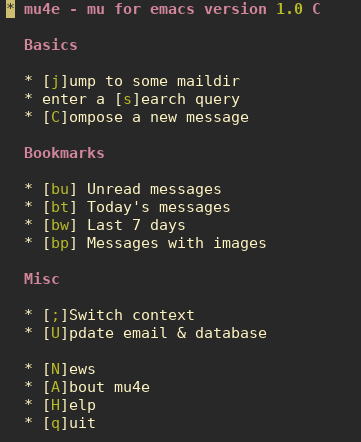
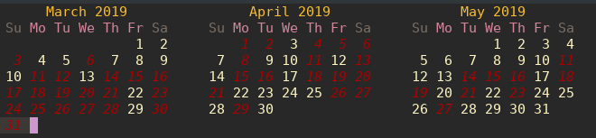
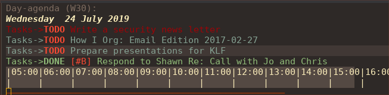
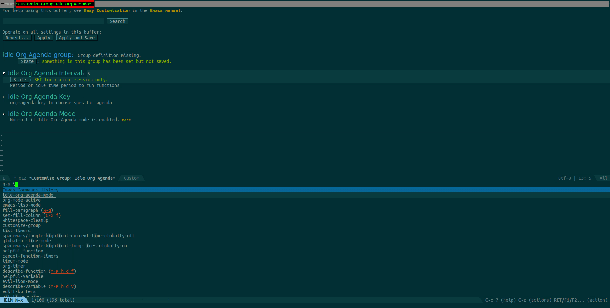

Created: 2019-07-25 Thu 13:02
:ID: f69170b3-8d72-439d-b3b7-6f0358fb361b
Opens up a world of other tings


org-clock-in, org-clock-out, org-clock-goto, org-clock-report, org-clock-resolve-clocks

org-downloadorg-download-screenshot, drag and drop,camcorder

mu4e, notmuch, org-mime-htmlize

crypt to automatically encrypt sections of a file with GPGorg-decrypt-entry–—BEGIN PGP MESSAGE–—
hQIMA/jYNcPWXvJ6ARAAygauqE6m4hK1h2LX/P43L1kXoaVyIdpge9RKFbejEDho SokDEGtdshtUatiQmcqMiTDhnL+1B6gjMMXhdG5J0VmigXghY8+NyYN9ndKfDi09 Vd68XxP36X/EKDS4oH+0CrtiWR4UojX9GW7xA6wdIRP7spR3Lc4bRNcIxbLhNr59 JDAM2u5yQE4rRhlwjbzUNF5QGrmY1UKL3gOklfGBZdpIs7EI14n24WBQJTP4cmi0 nAKY3NzvUyj4r+BF2g1Bx21lusuwPH3NXSkgjmHK4yZrGNyQXr1Xnv30pHls5Zvr j8IFAxpQ6sSw9CEI11uAhBx/CZUYSosHy36njUOsoLU8Muu0r6GruU8zDPmo47Qj q4tq3GVi/BgFds+vSMMHyom8gmTLK82WuETF/CPIkrdIIkpt9zTCRTzkeRF1U9LE 33PHKWsPji3wAjt0KrSArnRTGDI9qEJDU0rtouT1d5GIN8nzUJw8Np/GTPQ/SNR9 nyxPhevEzCCXGxBDf6cYjQpqMJuqGUmHhq8MzhuyAAXVOB5L0eirdPE+bczWNHrM xcVZr7Ofb6bJQYWy2FG0VWz28wFnhw75v9fEdPpyDAhMsn9TU/g15Shh72Hy+MGM G4X3iC5fdmnXjOz3Ig3cNIMFTyIgNL0RMUZEyoXJ4AC8KrulQnAPgxFORvHjmRzS UAF4y/iDJia45wGWIC+6J+seIRKx65ZX2gtCc/LFCGx1LEYuPqFTTkwa+Pw52DVa 9P1MogqpjoOuCKjEqXKwqGBexsLkxSgQXbDUnuNcvTaE =Lxf/ –—END PGP MESSAGE–—

ls ~/org/journal | grep -P "2019-0[345]" | head -n 5
| 2019-03-03 |
| 2019-03-06 |
| 2019-03-11 |
| 2019-03-12 |
| 2019-03-14 |


Created by Nick Anderson.